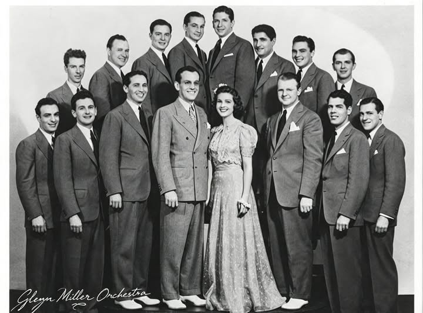

E
lement indélébile du big band américain, Glenn Miller naît dans l’Iowa (Etats-Unis) en 1904.
Tromboniste de formation, il fait ses premières armes au sein de divers orchestres dans les années 1920 avant de fonder son propre ensemble à la fin des années 1930.
C’est en 1938-1939 que son orchestre trouve sa signature sonore : une section de saxophones dominée par une clarinette en tête, créant une texture immédiatement reconnaissable.
C
ette identité musicale propulse The Glenn Miller Orchestra au sommet des classements américains, dès son premier succès, "Tuxedo Junction" en 1940
et devient l'un des groupes de swing les plus populaires de l'époque de la Seconde Guerre mondiale. Entre 1939 et 1942, l’orchestre enchaîne les hits et s’impose comme l’un des plus populaires des États-Unis.
Parmi ses plus grands succès figurent "In the Mood", "Moonlight Serenade", "Chattanooga Choo Choo" et "American Patrol", devenus des standards de l’ère swing.
E
n 1942, au sommet de sa gloire, Glenn Miller s’engage dans l’armée américaine, après avoir été refusé par la marine. Il dirige alors le Glenn MillerArmy Air Force Band, avec lequel il modernise la musique militaire
en y intégrant l’esprit du swing, jouant pour les troupes alliées en Angleterre durant la Seconde Guerre mondiale. Travaillant jusqu’à 18 heures par jour, l'orchestre
se produisait sur des dizaines de bases et à la radio, pour les soldats en proie au mal du pays. Sa musique évoquant le foyer.

Les commentaires sont soumis à modération et doivent être approuvés avant publication.